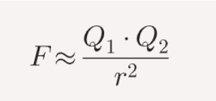
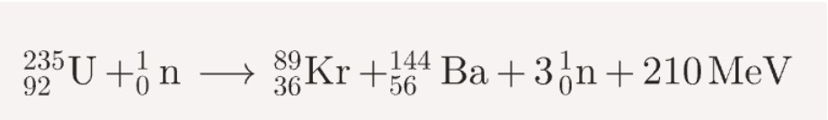
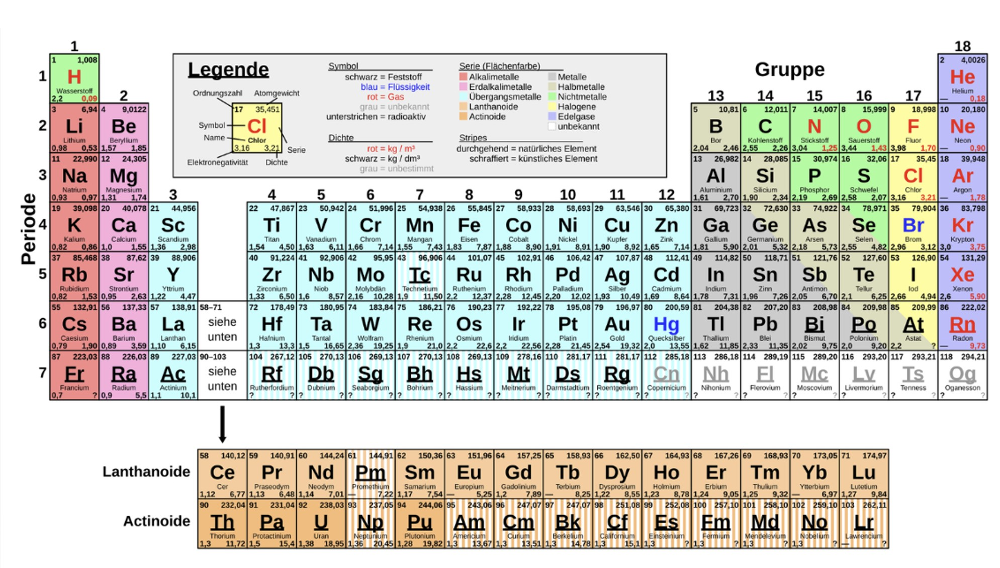
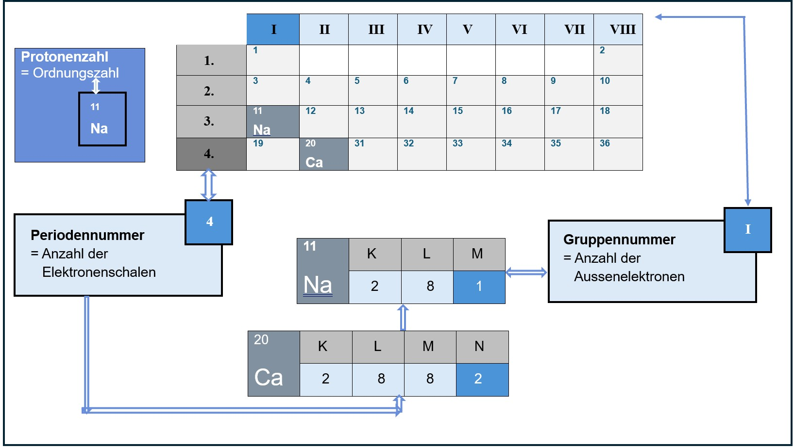

Inhaltsverzeichnis – Kapitel 2
2.2 Historisch Bedeutsame Atommodelle
Historisch wichtige Atommodelle und Personen
Demokrit (460–371 v. Chr.)
Demokrit glaubte, dass alles aus winzigen, unteilbaren Teilchen besteht, die er Atome nannte. Seine Vorstellung war rein philosophisch und nicht wissenschaftlich belegt.
John Dalton (1766–1844)
Dalton stellte sich Atome als kleine, feste Kugeln vor und meinte, dass Atome eines Elements gleich sind. Bei chemischen Reaktionen werden sie nicht zerstört, sondern nur neu angeordnet.
Joseph John Thomson (1856–1940)
Thomson entdeckte die Elektronen und beschrieb das Atom als positiv geladene Kugel mit eingelagerten Elektronen. Dieses Modell wird Rosinenkuchenmodell genannt.
Ernest Rutherford (1871–1937)
Rutherford entdeckte den Atomkern und zeigte, dass Atome aus einem kleinen, positiven Kern und einer Elektronenhülle bestehen. Die Elektronen bewegen sich um den Kern herum.
Niels Bohr (1889–1962)
Bohr erklärte, dass Elektronen auf festen Bahnen mit bestimmter Energie um den Kern kreisen. Sie können zwischen diesen Bahnen wechseln und dabei Licht aufnehmen oder abgeben.
Arnold Sommerfeld (1868–1951)
Sommerfeld erweiterte Bohrs Modell, indem er zeigte, dass Elektronen auch auf elliptischen Bahnen laufen. Dadurch konnte man die feinen Unterschiede in den Lichtspektren der Atome besser erklären.
⬆️ Zurück nach oben2.3 Atome enthalten Elektronen
Elektrische Ladungen & Elektronen
Elektrische Aufladung
Beim Reiben zweier Materialien können Elektronen von einem Stoff auf den anderen übergehen. Dadurch werden beide Körper elektrisch aufgeladen. Hat ein Körper zu viele Elektronen, ist er negativ geladen, und hat er zu wenige, ist er positiv geladen.
Wirkung geladener Körper
Geladene Körper beeinflussen sich gegenseitig:
- Ungleichartige Ladungen ziehen sich an.
- Gleichartige Ladungen stoßen sich ab.
Beispiele:
- Ein aufgeladener Kunststoffstab zieht ein Alukügelchen an, stößt es nach der Berührung aber wieder ab.
- Folie und Papier ziehen sich nach dem Reiben an.
- Zwei geladene Folienstreifen stoßen sich gegenseitig ab.
Stärke der elektrischen Kraft
Wie stark die elektrische Kraft ist, hängt davon ab:
- wie groß die Ladungen sind
- wie weit die Körper voneinander entfernt sind
Je größer die Ladungen und je kleiner der Abstand, desto stärker wirkt die Kraft. Dies beschreibt das Coulomb-Gesetz.

Coulomb-Gesetz
Elektronen und Atome
Elektronen sind die kleinsten negativen Ladungsträger und stammen aus den Atomen. Sie können von Atomen abgetrennt oder hinzugefügt werden – dadurch entsteht elektrische Aufladung.
⬆️ Zurück nach oben2.4 Kern-Hülle-Modell
Noch kein Inhalt vorhanden.
⬆️ Zurück nach oben2.5 Aufbau des Atoms
Noch kein Inhalt vorhanden.
2.5.1 Kern
Noch kein Inhalt vorhanden.
2.5.2 Hülle
Noch kein Inhalt vorhanden.
2.5.3 Zusammenfassung
Noch kein Inhalt vorhanden.
2.5.4 Isotope
Noch kein Inhalt vorhanden.
⬆️ Zurück nach oben2.6 Radioaktivität
Radioaktive Stoffe zerfallen mit der Zeit. Jede Art von radioaktivem Stoff besitzt eine Halbwertszeit.
Für organische Materialien verwendet man die C‑14‑Methode.
2.6.6 Altersbestimmung mittels 14C‑Methode
Eine Mumie hat nur noch 60 % ihrer ursprünglichen C‑14‑Aktivität.
Gegeben:
- Halbwertszeit: 5730 Jahre
- Aktivität: 60 % = 0.60
Gesucht: Alter der Mumie
Notizen:
Alter der Mumie: Jahre
2.6.7 Dosimeter
Ein Dosimeter misst, wie viel Strahlung eine Person abbekommt.
2.6.8 Kernreaktionen
1938 entdeckten Hahn und Strassmann die Kernspaltung.

2.7 Periodensystem

2.7.1 Schalenmodell – einfach erklärt
1. Elektronen bewegen sich in Schalen
In einem Atom befinden sich die Elektronen nicht irgendwo, sondern in bestimmten Bereichen um den Kern. Diese Bereiche nennt man Elektronenschalen. Sie liegen wie Zwiebelringe konzentrisch um den Kern herum.
2. Jede Schale hat eine Nummer und einen Buchstaben
Die Schalen werden von innen nach außen nummeriert:
- n = 1 ist die innerste Schale
- n = 7 ist die äußerste theoretische Schale
Zusätzlich tragen sie die Namen K bis Q.
3. Wie viele Elektronen passen in eine Schale?
Dafür gibt es eine einfache Formel:
z = 2n²
Beispiele:
- n = 1 → 2 Elektronen
- n = 2 → 8 Elektronen
- n = 3 → 18 Elektronen
4. Die äußerste Schale hat eine Sonderregel
In der äußersten Schale befinden sich nie mehr als 8 Elektronen.
5. Warum ist das wichtig?
- wie ein Atom reagiert
- ob es Elektronen abgibt oder aufnimmt
- warum Elemente ähnliche Eigenschaften haben
- warum Edelgase besonders stabil sind
2.7.2 Periode und Hauptgruppe
Die Periode und die Hauptgruppe haben einen Zusammenhang zwischen dem Bau des Atoms und der Stellung im Periodensystem.
Um den Zusammenhang zu erklären, habe ich zwei Beispiele ausgewählt.

Lückentext: Das Element Phosphor
Fülle die Lücken im Text über das Element Phosphor aus.
Phosphor steht in der Periode und in der Hauptgruppe.
Die Ordnungszahl lautet .
Die Atommasse beträgt ungefähr .
Phosphor besitzt Protonen und Neutronen.
In der Hülle befinden sich Elektronen.
Die Elektronen verteilen sich auf Schalen: in der K‑Schale, in der L‑Schale und in der M‑Schale.
2.7.3 Periodische Eigenschaften
Elementklassen im Periodensystem
Die Periodentabelle lässt sich in drei Elementklassen einteilen:
- Metalle
- Halbmetalle
- Nichtmetalle
Was unterscheidet diese Klassen?
Metalle
- leiten elektrischen Strom
- haben metallischen Glanz
- sind verformbar
Halbmetalle
- sehen aus wie Metalle
- verhalten sich chemisch wie Nichtmetalle
- leiten Strom nur schwach
Nichtmetalle
- leiten keinen elektrischen Strom
- sind spröde
- viele sind gasförmig
Hauptgruppen (8 Gruppen)
Metalle, Halbmetalle und Nichtmetalle lassen sich in 8 verschiedene Hauptgruppen einteilen.
Gruppe I
- Wasserstoff + Alkalimetalle
Gruppe II
- Erdalkalimetalle
Gruppe III
- Borgruppe
Gruppe IV
- Kohlenstoffgruppe
Gruppe V
- Stickstoffgruppe
Gruppe VI
- Chalkogene
Gruppe VII
- Halogene
Gruppe VIII
- Edelgase
Die wichtigsten Hauptgruppen sind Alkalimetalle, Erdalkalimetalle, Chalkogene, Halogene und Edelgase.
⬆️ Zurück nach oben